She adopted her prey
She’s a lion. And she adopted the baby she was supposed to eat.

Kenya, 2002. A wild lioness found a newborn oryx, all alone.
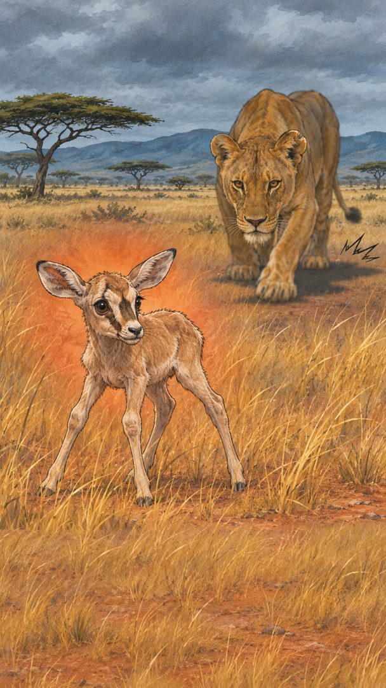
She didn’t kill it. She lay down beside it.
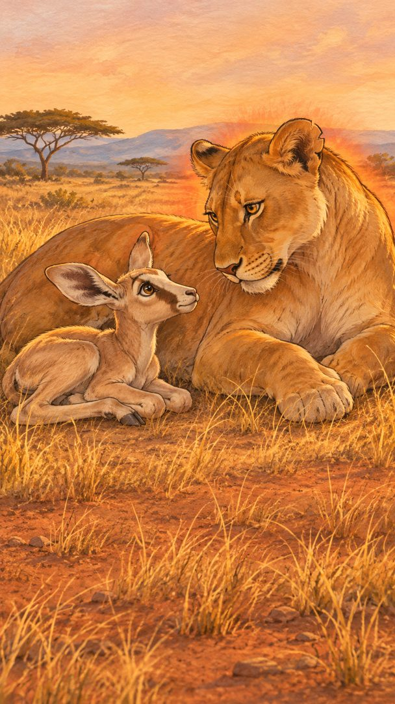
She licked it.
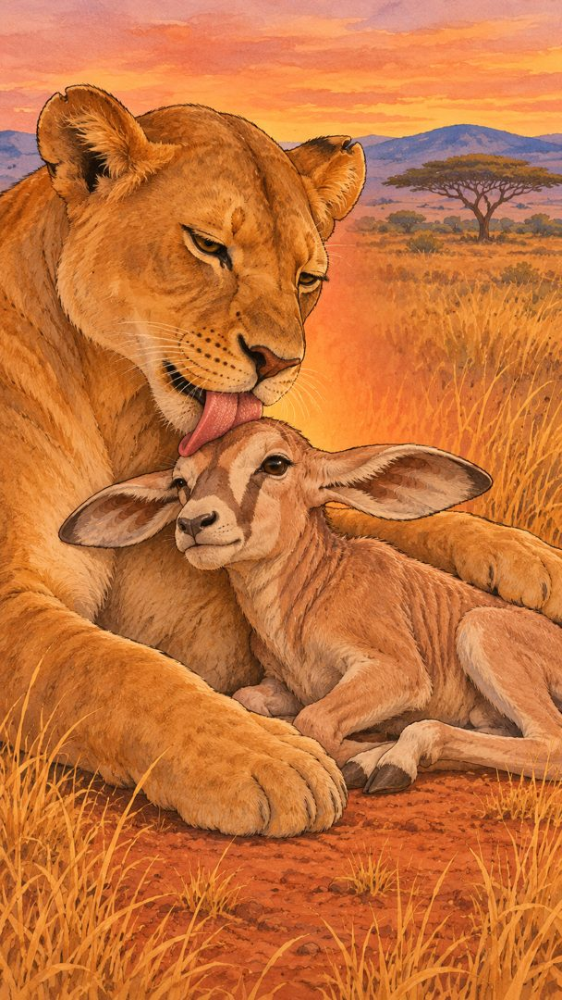
Walked with it.
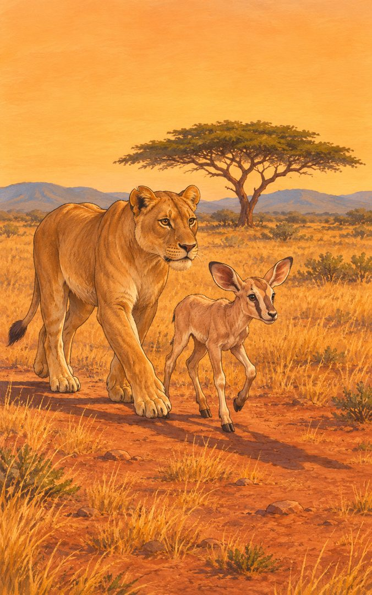
When other lions came near, she chased them off.
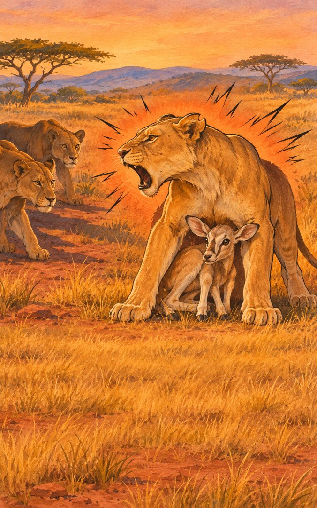
But she had no milk for it.
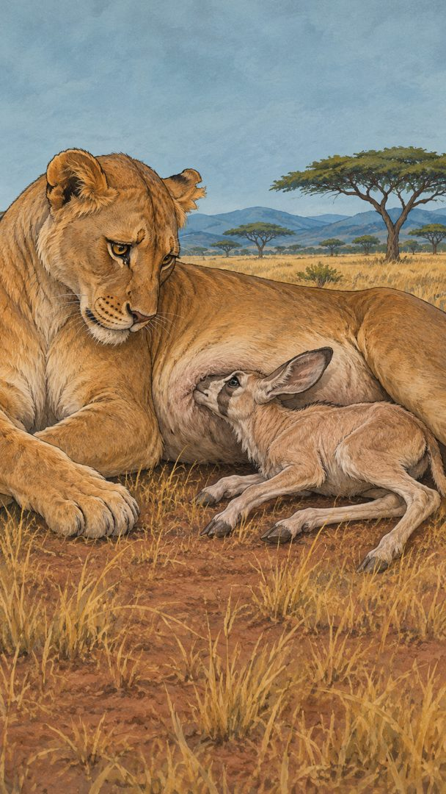
And its real mother watched from far away, too scared to come close.
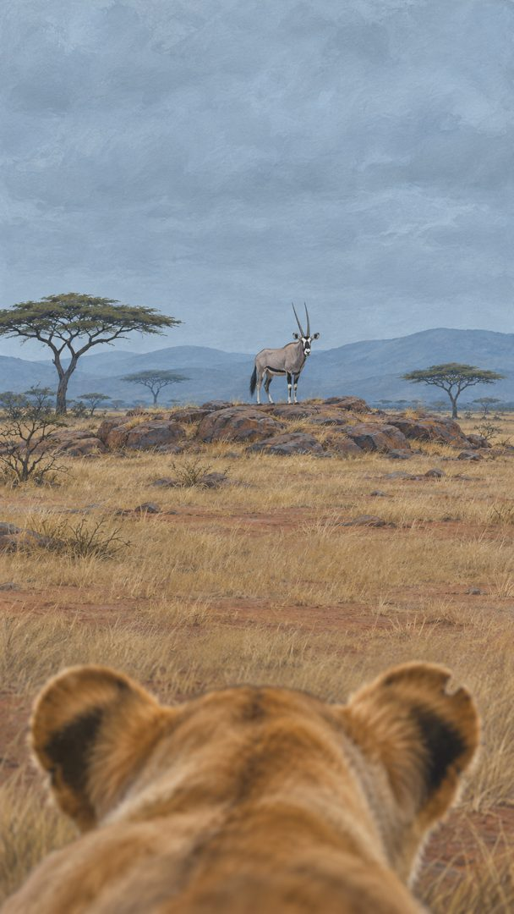
For two weeks, the lioness didn’t hunt. She got thinner. The baby got weaker.
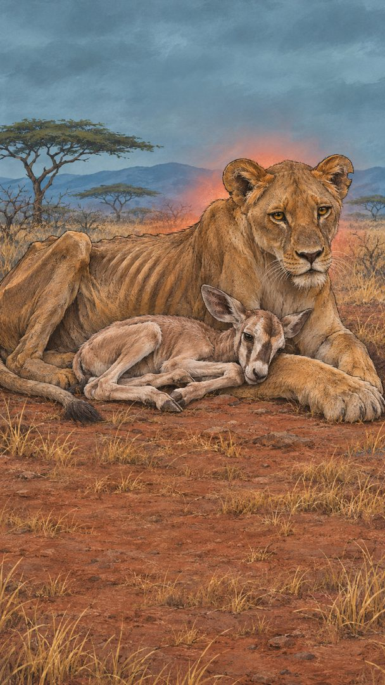
Then one hot afternoon, she fell asleep.
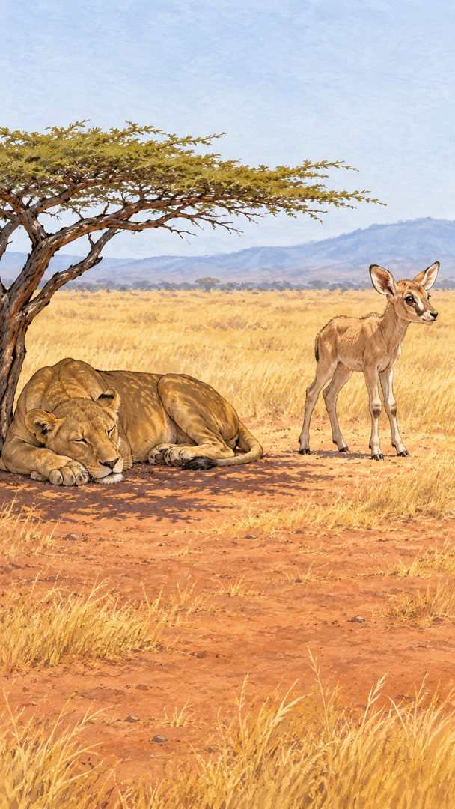
A male lion found the calf.
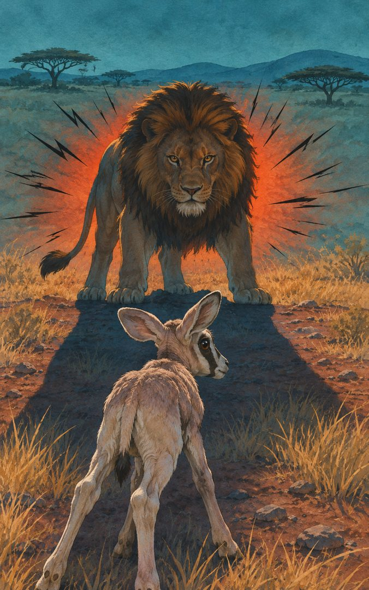
When she woke up, it was gone.
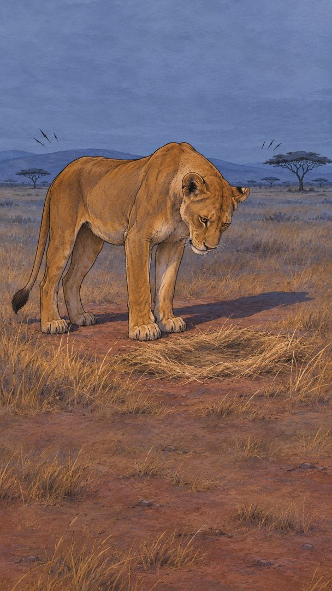
But weeks later, she adopted another one. Then another. Five baby oryx in one year.
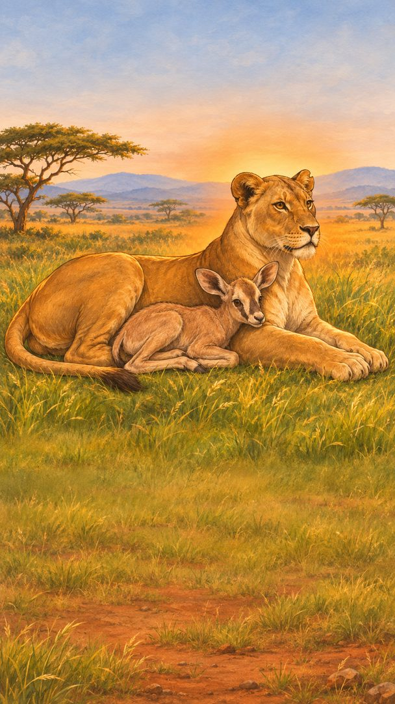
Nobody knows why. The Samburu people named her Kamunyak: the blessed one.
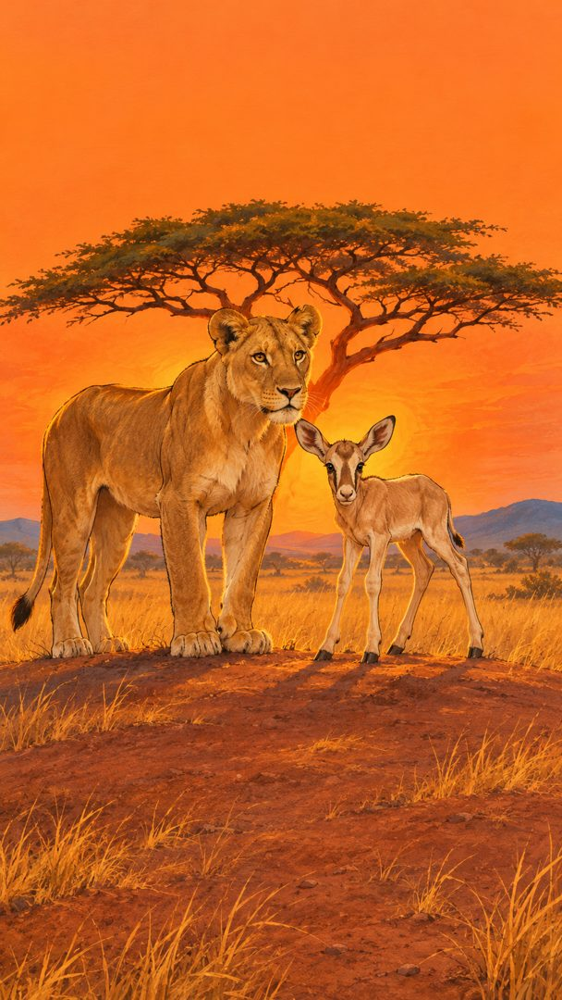
A fable based on real events: Kamunyak, Samburu National Reserve, Kenya, 2002. Illustrations are AI-generated. Source: VOA Learning English, 8 Nov 2002.